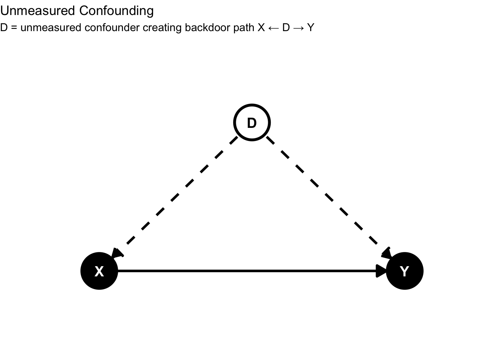
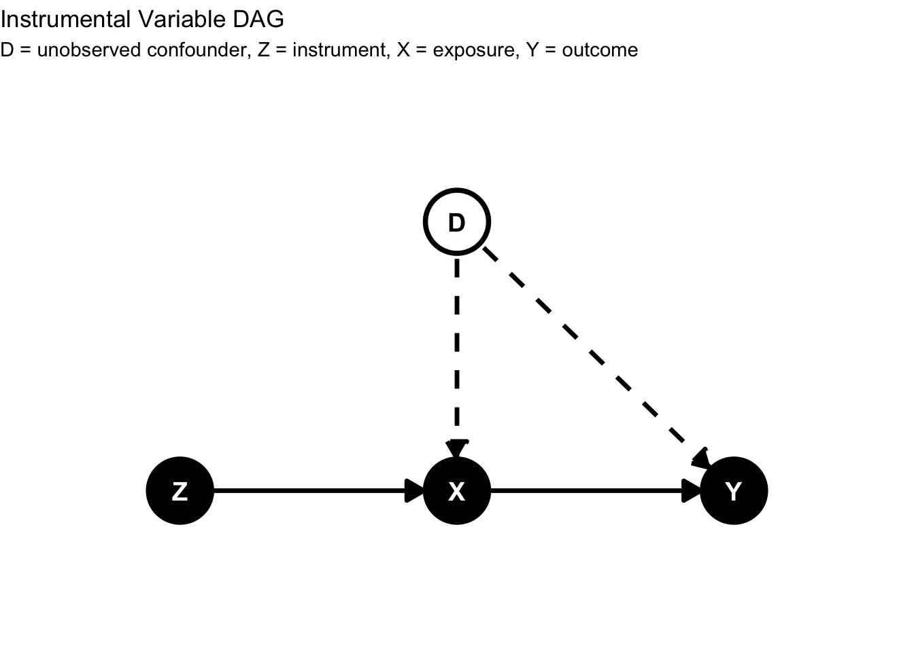

Research Guide Title
Abstract
A brief summary of the research guide. Include key highlights and findings here.
Keywords
List relevant keywords that describe the content of the research guide. Examples include research methods, statistical software, data analysis, etc.
Introduction

Methods
Core Assumptions
Instrumental variables rely on a small set of core assumptions — make them explicit when presenting an IV strategy:
Relevance: The instrument must affect treatment. Formally, \(\text{Cov}(Z,D) \neq 0\), or \(\pi_1 \neq 0\) in the first-stage regression. This is testable via the first-stage regression and its F-statistic.
Independence / Exogeneity: The instrument must be as-good-as-randomly assigned with respect to potential outcomes and unobserved confounders. This is often satisfied by random assignment or a credible natural experiment. Notation: \(Z \perp\!\!\!\perp (Y(0), Y(1)) | X\).
Exclusion Restriction: The instrument affects the outcome only through the treatment, meaning there is no direct effect. In potential outcomes notation, \(Y(z,d) = Y(d)\). This assumption is generally not testable and must be argued on substantive grounds.
Monotonicity: There are no “defiers”, which are units for which \(Z\) increases the probability of treatment in the opposite direction. A common formulation: \(D_i(1) \geq D_i(0)\) for all \(i\).
Constant vs. Heterogeneous Effects
Constant Effects: If the treatment effect is the same for everyone, such that \(\beta_i = \beta\), IV identifies the Average Treatment Effect (ATE).
Heterogeneous Effects: If treatment effects vary across individuals, and Monotonicity holds, IV identifies the Local Average Treatment Effect (LATE). This is the average treatment effect for the subpopulation of compliers, defined as those who take treatment if assigned to it, but not otherwise.
Implementation
First-stage, Reduced-form, and 2SLS
First-stage
The regression that shows how the instrument moves treatment. Typically: \[ D_i = \pi_0 + \pi_1 Z_i + \gamma X_i + u_i \]
The estimated coefficient on \(Z\) (\(\hat{\pi}_1\)) measures relevance.
Reduced-form
The regression of the outcome on the instrument. It captures the total effect of \(Z\) on \(Y\): \[ Y_i = \alpha_0 + \alpha_1 Z_i + \delta X_i + v_i \]
The reduced-form coefficient \(\hat{\alpha}_1\) equals the intention-to-treat (ITT) effect in experiments.
Two-stage least squares (2SLS)
Implement IV by first predicting treatment from the instrument, known as the first stage, and then regressing the outcome on the predicted treatment, known as the second stage. \[ Y_i = \beta_0 + \beta_1 \hat{D}_i + \theta X_i + \epsilon_i \]
In the simple one-instrument setting, \(\hat{\beta}_{2SLS} = \hat{\alpha}_1 / \hat{\pi}_1\).
Implementation
- Implementation via Math
- Implementation via statistical software
Recreate Our Example Data
For this exercise we’ll use simulated data to illustrate how to perform first-stage, reduced-form, and a simple 2SLS implementation.
# Python code here
print("Hello Python")[1] "Hello Python"# Python code here
print("Hello Python")Hello Pythondisplay "Hello Stata"Hello StataNotes on code within Quarto Document:
- All Code should follow established style guide:
- Comments should be used to dictate “why” not “what” or “how”
- Only show code for implementation, evaluation, etc. (use macros to manage code)
Interpretation
Summarize the key points and implications of the research.